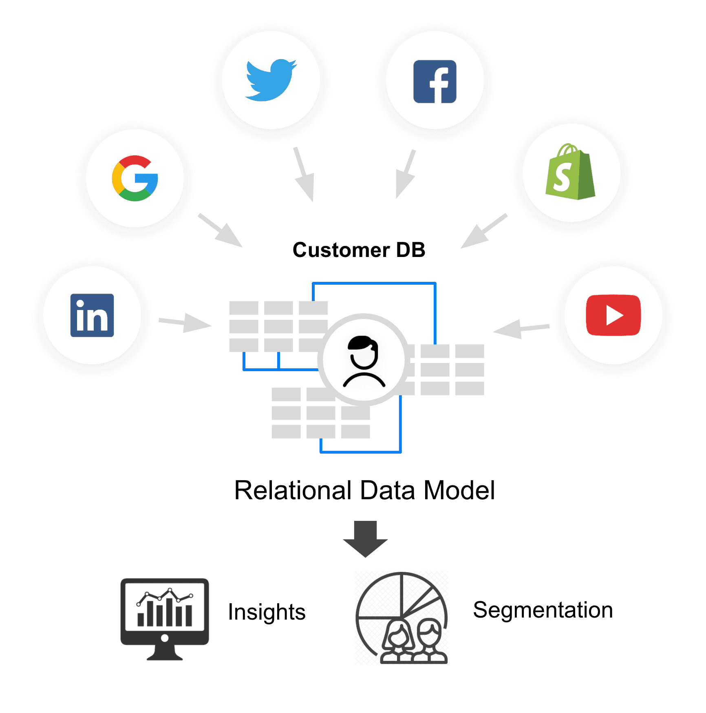
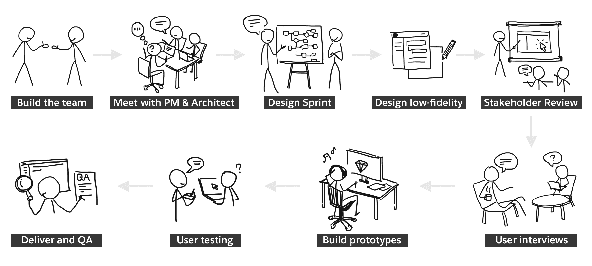

Customer data platform (CDP) is the hottest Marketing Technology at the point of 2019-2020. It captures customer data from all touch points and integrates them into a unified data model to enrich the understanding of customers. This is the foundation that companies regardless B2B or B2C can realize the customer 360 degree view in Salesforce systems.
I was the 2nd designer joined the product team, starting from 0 to 1. I helped building the team of 12 designers, laid the foundation of the product, architected the UX work flows and UI framework. I was mainly responsible for delivering the Data Stream feature (data in) and Activation feature (data out). As the product design lead on these key features, I worked end-to-end from clarifying requirements to testing, delivery and QA.
Data Stream is the ETL pipeline that connects the external systems with CDP to ingest data into the datalake. The challenge of this design is to accommodate many different data sources with standard UX framework for data ingestion and transformation.
To enpower marketers to ingest data without IT support, we provide a cononical data model out-of-the-box. In this way, user don't need to worry about the data relationships but just need to map the new data to the semantic tags defined in the pre-built data model.
The primary usecase of data in marketing is segmentation. With the enriched customer data, user will be able to define filters to build the right audience for the right marketing content.
After a segment is built, user can activate the segment to many different marketing or advertising platforms to run the campaign. The Activation UX aims to giving user wide range of options and intelligent recommendations to find the best channel for the audiences.